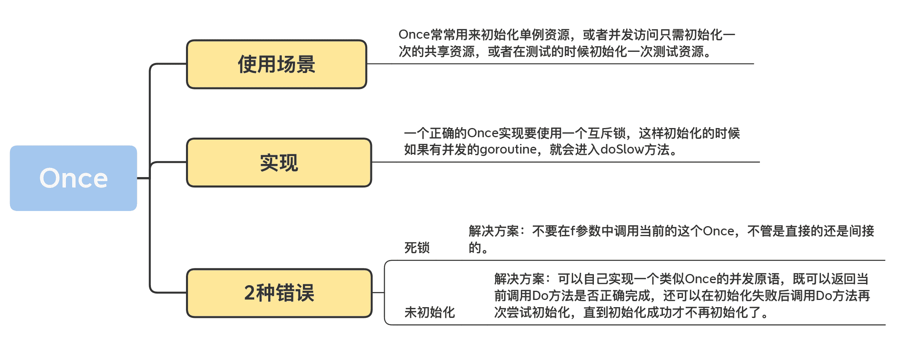

08 | Once：一個簡約而不簡單的併發原語
你好，我是鳥窩。
這一講我來講一個簡單的併發原語：Once。為什麼要學習 Once 呢？我先給你答案：Once 可以用來執行且僅僅執行一次動作，常常用於單例對象的初始化場景。
那這節課，我們就從對單例對象進行初始化這件事兒說起。
初始化單例資源有很多方法，比如定義 package 級別的變量，這樣程序在啟動的時候就可以初始化：
package abc
import time
var startTime = time.Now()
或者在 init 函數中進行初始化：
package abc
var startTime time.Time
func init() {
startTime = time.Now()
}
又或者在 main 函數開始執行的時候，執行一個初始化的函數：
package abc
var startTime time.Tim
func initApp() {
startTime = time.Now()
}
func main() {
initApp()
}
這三種方法都是線程安全的，並且後兩種方法還可以根據傳入的參數實現定製化的初始化操作。
但是很多時候我們是要延遲進行初始化的，所以有時候單例資源的初始化，我們會使用下面的方法：
package main
import (
"net"
"sync"
"time"
)
// 使用互斥鎖保證線程(goroutine)安全
var connMu sync.Mutex
var conn net.Conn
func getConn() net.Conn {
connMu.Lock()
defer connMu.Unlock()
// 返回已創建好的連接
if conn != nil {
return conn
}
// 創建連接
conn, _ = net.DialTimeout("tcp", "baidu.com:80", 10*time.Second)
return conn
}
// 使用連接
func main() {
conn := getConn()
if conn == nil {
panic("conn is nil")
}
}
這種方式雖然實現起來簡單，但是有性能問題。一旦連接創建好，每次請求的時候還是得競爭鎖才能讀取到這個連接，這是比較浪費資源的，因為連接如果創建好之後，其實就不需要鎖的保護了。怎麼辦呢？
這個時候就可以使用這一講要介紹的 Once 併發原語了。接下來我會詳細介紹 Once 的使用、實現和易錯場景。
Once 的使用場景
sync.Once 只暴露了一個方法 Do，你可以多次調用 Do 方法，但是隻有第一次調用 Do 方法時 f 參數才會執行，這裡的 f 是一個無參數無返回值的函數。
func (o *Once) Do(f func())
因為當且僅當第一次調用 Do 方法的時候參數 f 才會執行，即使第二次、第三次、第 n 次調用時 f 參數的值不一樣，也不會被執行，比如下面的例子，雖然 f1 和 f2 是不同的函數，但是第二個函數 f2 就不會執行。
package main
import (
"fmt"
"sync"
)
func main() {
var once sync.Once
// 第一個初始化函數
f1 := func() {
fmt.Println("in f1")
}
once.Do(f1) // 打印出 in f1
// 第二個初始化函數
f2 := func() {
fmt.Println("in f2")
}
once.Do(f2) // 無輸出
}
因為這裡的 f 參數是一個無參數無返回的函數，所以你可能會通過閉包的方式引用外面的參數，比如：
var addr = "baidu.com"
var conn net.Conn
var err error
once.Do(func() {
conn, err = net.Dial("tcp", addr)
})
而且在實際的使用中，絕大多數情況下，你會使用閉包的方式去初始化外部的一個資源。
你看，Once 的使用場景很明確，所以，在標準庫內部實現中也常常能看到 Once 的身影。
比如標準庫內部cache的實現上，就使用了 Once 初始化 Cache 資源，包括 defaultDir 值的獲取：
func Default() *Cache { // 獲取默認的Cache
defaultOnce.Do(initDefaultCache) // 初始化cache
return defaultCache
}
// 定義一個全局的cache變量，使用Once初始化，所以也定義了一個Once變量
var (
defaultOnce sync.Once
defaultCache *Cache
)
func initDefaultCache() { //初始化cache,也就是Once.Do使用的f函數
......
defaultCache = c
}
// 其它一些Once初始化的變量，比如defaultDir
var (
defaultDirOnce sync.Once
defaultDir string
defaultDirErr error
)
還有一些測試的時候初始化測試的資源（export_windows_test）：
// 測試window系統調用時區相關函數
func ForceAusFromTZIForTesting() {
ResetLocalOnceForTest()
// 使用Once執行一次初始化
localOnce.Do(func() { initLocalFromTZI(&aus) })
}
除此之外，還有保證只調用一次 copyenv 的 envOnce，strings 包下的 Replacer，time 包中的測試，Go 拉取庫時的proxy，net.pipe，crc64，Regexp，…，數不勝數。我給你重點介紹一下很值得我們學習的 math/big/sqrt.go 中實現的一個數據結構，它通過 Once 封裝了一個只初始化一次的值：
// 值是3.0或者0.0的一個數據結構
var threeOnce struct {
sync.Once
v *Float
}
// 返回此數據結構的值，如果還沒有初始化為3.0，則初始化
func three() *Float {
threeOnce.Do(func() { // 使用Once初始化
threeOnce.v = NewFloat(3.0)
})
return threeOnce.v
}
它將 sync.Once 和 *Float 封裝成一個對象，提供了只初始化一次的值 v。 你看它的 three 方法的實現，雖然每次都調用 threeOnce.Do 方法，但是參數只會被調用一次。
當你使用 Once 的時候，你也可以嘗試採用這種結構，將值和 Once 封裝成一個新的數據結構，提供只初始化一次的值。
總結一下 Once 併發原語解決的問題和使用場景：Once 常常用來初始化單例資源，或者併發訪問只需初始化一次的共享資源，或者在測試的時候初始化一次測試資源。
瞭解了 Once 的使用場景，那應該怎樣實現一個 Once 呢？
如何實現一個 Once？
很多人認為實現一個 Once 一樣的併發原語很簡單，只需使用一個 flag 標記是否初始化過即可，最多是用 atomic 原子操作這個 flag，比如下面的實現：
type Once struct {
done uint32
}
func (o *Once) Do(f func()) {
if !atomic.CompareAndSwapUint32(&o.done, 0, 1) {
return
}
f()
}
這確實是一種實現方式，但是，這個實現有一個很大的問題，就是如果參數 f 執行很慢的話，後續調用 Do 方法的 goroutine 雖然看到 done 已經設置為執行過了，但是獲取某些初始化資源的時候可能會得到空的資源，因為 f 還沒有執行完。
所以，一個正確的 Once 實現要使用一個互斥鎖，這樣初始化的時候如果有併發的 goroutine，就會進入doSlow 方法。互斥鎖的機制保證只有一個 goroutine 進行初始化，同時利用雙檢查的機制（double-checking），再次判斷 o.done 是否為 0，如果為 0，則是第一次執行，執行完畢後，就將 o.done 設置為 1，然後釋放鎖。
即使此時有多個 goroutine 同時進入了 doSlow 方法，因為雙檢查的機制，後續的 goroutine 會看到 o.done 的值為 1，也不會再次執行 f。
這樣既保證了併發的 goroutine 會等待 f 完成，而且還不會多次執行 f。
type Once struct {
done uint32
m Mutex
}
func (o *Once) Do(f func()) {
if atomic.LoadUint32(&o.done) == 0 {
o.doSlow(f)
}
}
func (o *Once) doSlow(f func()) {
o.m.Lock()
defer o.m.Unlock()
// 雙檢查
if o.done == 0 {
defer atomic.StoreUint32(&o.done, 1)
f()
}
}
好了，到這裡我們就瞭解了 Once 的使用場景，很明確，同時呢，也感受到 Once 的實現也是相對簡單的。在實踐中，其實很少會出現錯誤使用 Once 的情況，但是就像墨菲定律說的，凡是可能出錯的事就一定會出錯。使用 Once 也有可能出現兩種錯誤場景，儘管非常罕見。我這裡提前講給你，咱打個預防針。
使用 Once 可能出現的 2 種錯誤
第一種錯誤：死鎖
你已經知道了 Do 方法會執行一次 f，但是如果 f 中再次調用這個 Once 的 Do 方法的話，就會導致死鎖的情況出現。這還不是無限遞歸的情況，而是的的確確的 Lock 的遞歸調用導致的死鎖。
func main() {
var once sync.Once
once.Do(func() {
once.Do(func() {
fmt.Println("初始化")
})
})
}
當然，想要避免這種情況的出現，就不要在 f 參數中調用當前的這個 Once，不管是直接的還是間接的。
第二種錯誤：未初始化
如果 f 方法執行的時候 panic，或者 f 執行初始化資源的時候失敗了，這個時候，Once 還是會認為初次執行已經成功了，即使再次調用 Do 方法，也不會再次執行 f。
比如下面的例子，由於一些防火牆的原因，googleConn 並沒有被正確的初始化，後面如果想當然認為既然執行了 Do 方法 googleConn 就已經初始化的話，會拋出空指針的錯誤：
func main() {
var once sync.Once
var googleConn net.Conn // 到Google網站的一個連接
once.Do(func() {
// 建立到google.com的連接，有可能因為網絡的原因，googleConn並沒有建立成功，此時它的值為nil
googleConn, _ = net.Dial("tcp", "google.com:80")
})
// 發送http請求
googleConn.Write([]byte("GET / HTTP/1.1\r\nHost: google.com\r\n Accept: */*\r\n\r\n"))
io.Copy(os.Stdout, googleConn)
}
既然執行過 Once.Do 方法也可能因為函數執行失敗的原因未初始化資源，並且以後也沒機會再次初始化資源，那麼這種初始化未完成的問題該怎麼解決呢？
這裡我來告訴你一招獨家秘笈，我們可以自己實現一個類似 Once 的併發原語，既可以返回當前調用 Do 方法是否正確完成，還可以在初始化失敗後調用 Do 方法再次嘗試初始化，直到初始化成功才不再初始化了。
// 一個功能更加強大的Once
type Once struct {
m sync.Mutex
done uint32
}
// 傳入的函數f有返回值error，如果初始化失敗，需要返回失敗的error
// Do方法會把這個error返回給調用者
func (o *Once) Do(f func() error) error {
if atomic.LoadUint32(&o.done) == 1 { //fast path
return nil
}
return o.slowDo(f)
}
// 如果還沒有初始化
func (o *Once) slowDo(f func() error) error {
o.m.Lock()
defer o.m.Unlock()
var err error
if o.done == 0 { // 雙檢查，還沒有初始化
err = f()
if err == nil { // 初始化成功才將標記置為已初始化
atomic.StoreUint32(&o.done, 1)
}
}
return err
}
我們所做的改變就是 Do 方法和參數 f 函數都會返回 error，如果 f 執行失敗，會把這個錯誤信息返回。
對 slowDo 方法也做了調整，如果 f 調用失敗，我們不會更改 done 字段的值，這樣後續 degoroutine 還會繼續調用 f。如果 f 執行成功，才會修改 done 的值為 1。
可以說，真是一頓操作猛如虎，我們使用 Once 有點得心應手的感覺了。等等，還有個問題，我們怎麼查詢是否初始化過呢？
目前的 Once 實現可以保證你調用任意次數的 once.Do 方法，它只會執行這個方法一次。但是，有時候我們需要打一個標記。如果初始化後我們就去執行其它的操作，標準庫的 Once 並不會告訴你是否初始化完成了，只是讓你放心大膽地去執行 Do 方法，所以，你還需要一個輔助變量，自己去檢查是否初始化過了，比如通過下面的代碼中的 inited 字段：
type AnimalStore struct {once sync.Once;inited uint32}
func (a *AnimalStore) Init() // 可以被併發調用
a.once.Do(func() {
longOperationSetupDbOpenFilesQueuesEtc()
atomic.StoreUint32(&a.inited, 1)
})
}
func (a *AnimalStore) CountOfCats() (int, error) { // 另外一個goroutine
if atomic.LoadUint32(&a.inited) == 0 { // 初始化後才會執行真正的業務邏輯
return 0, NotYetInitedError
}
//Real operation
}
當然，通過這段代碼，我們可以解決這類問題，但是，如果官方的 Once 類型有 Done 這樣一個方法的話，我們就可以直接使用了。這是有人在 Go 代碼庫中提出的一個 issue(#41690)。對於這類問題，一般都會被建議採用其它類型，或者自己去擴展。我們可以嘗試擴展這個併發原語：
// Once 是一個擴展的sync.Once類型，提供了一個Done方法
type Once struct {
sync.Once
}
// Done 返回此Once是否執行過
// 如果執行過則返回true
// 如果沒有執行過或者正在執行，返回false
func (o *Once) Done() bool {
return atomic.LoadUint32((*uint32)(unsafe.Pointer(&o.Once))) == 1
}
func main() {
var flag Once
fmt.Println(flag.Done()) //false
flag.Do(func() {
time.Sleep(time.Second)
})
fmt.Println(flag.Done()) //true
}
好了，到這裡關於併發原語 Once 的內容我講得就差不多了。最後呢，和你分享一個 Once 的踩坑案例。
其實啊，使用 Once 真的不容易犯錯，想犯錯都很困難，因為很少有人會傻傻地在初始化函數 f 中遞歸調用 f，這種死鎖的現象幾乎不會發生。另外如果函數初始化不成功，我們一般會 panic，或者在使用的時候做檢查，會及早發現這個問題，在初始化函數中加強代碼。
所以查看大部分的 Go 項目，幾乎找不到 Once 的錯誤使用場景，不過我還是發現了一個。這個 issue 先從另外一個需求 (go#25955) 談起。
Once 的踩坑案例
go#25955 有網友提出一個需求，希望 Once 提供一個 Reset 方法，能夠將 Once 重置為初始化的狀態。比如下面的例子，St 通過兩個 Once 控制它的 Open/Close 狀態。但是在 Close 之後再調用 Open 的話，不會再執行 init 函數，因為 Once 只會執行一次初始化函數。
type St struct {
openOnce *sync.Once
closeOnce *sync.Once
}
func(st *St) Open(){
st.openOnce.Do(func() { ... }) // init
...
}
func(st *St) Close(){
st.closeOnce.Do(func() { ... }) // deinit
...
}
所以提交這個 Issue 的開發者希望 Once 增加一個 Reset 方法，Reset 之後再調用 once.Do 就又可以初始化了。
Go 的核心開發者 Ian Lance Taylor 給他了一個簡單的解決方案。在這個例子中，只使用一個 ponce *sync.Once 做初始化，Reset 的時候給 ponce 這個變量賦值一個新的 Once 實例即可 (ponce = new(sync.Once))。Once 的本意就是執行一次，所以 Reset 破壞了這個併發原語的本意。
這個解決方案一點都沒問題，可以很好地解決這位開發者的需求。Docker 較早的版本（1.11.2）中使用了它們的一個網絡庫 libnetwork，這個網絡庫在使用 Once 的時候就使用 Ian Lance Taylor 介紹的方法，但是不幸的是，它的 Reset 方法中又改變了 Once 指針的值，導致程序 panic 了。原始邏輯比較複雜，一個簡化版可重現的代碼如下：
package main
import (
"fmt"
"sync"
"time"
)
// 一個組合的併發原語
type MuOnce struct {
sync.RWMutex
sync.Once
mtime time.Time
vals []string
}
// 相當於reset方法，會將m.Once重新複製一個Once
func (m *MuOnce) refresh() {
m.Lock()
defer m.Unlock()
m.Once = sync.Once{}
m.mtime = time.Now()
m.vals = []string{m.mtime.String()}
}
// 獲取某個初始化的值，如果超過某個時間，會reset Once
func (m *MuOnce) strings() []string {
now := time.Now()
m.RLock()
if now.After(m.mtime) {
defer m.Do(m.refresh) // 使用refresh函數重新初始化
}
vals := m.vals
m.RUnlock()
return vals
}
func main() {
fmt.Println("Hello, playground")
m := new(MuOnce)
fmt.Println(m.strings())
fmt.Println(m.strings())
}
如果你執行這段代碼就會 panic:

原因在於第 31 行執行 m.Once.Do 方法的時候，使用的是 m.Once 的指針，然後調用 m.refresh，在執行 m.refresh 的時候 Once 內部的 Mutex 首先會加鎖（可以再翻看一下這一講的 Once 的實現原理）， 但是，在 refresh 中更改了 Once 指針的值之後，結果在執行完 refresh 釋放鎖的時候，釋放的是一個剛初始化未加鎖的 Mutex，所以就 panic 了。
如果你還不太明白，我再給你簡化成一個更簡單的例子：
package main
import (
"sync"
)
type Once struct {
m sync.Mutex
}
func (o *Once) doSlow() {
o.m.Lock()
defer o.m.Unlock()
// 這裡更新的o指針的值!!!!!!!, 會導致上一行Unlock出錯
*o = Once{}
}
func main() {
var once Once
once.doSlow()
}
doSlow 方法就演示了這個錯誤。Ian Lance Taylor 介紹的 Reset 方法沒有錯誤，但是你在使用的時候千萬別再初始化函數中 Reset 這個 Once，否則勢必會導致 Unlock 一個未加鎖的 Mutex 的錯誤。
總的來說，這還是對 Once 的實現機制不熟悉，又進行復雜使用導致的錯誤。不過最新版的 libnetwork 相關的地方已經去掉了 Once 的使用了。所以，我帶你一起來看這個案例，主要目的還是想鞏固一下我們對 Once 的理解。
總結
今天我們一起學習了 Once，我們常常使用它來實現單例模式。
單例是 23 種設計模式之一，也是常常引起爭議的設計模式之一，甚至有人把它歸為反模式。為什麼說它是反模式呢，我拿標準庫中的單例模式給你介紹下。
因為 Go 沒有 immutable 類型，導致我們聲明的全局變量都是可變的，別的地方或者第三方庫可以隨意更改這些變量。比如 package io 中定義了幾個全局變量，比如 io.EOF：
var EOF = errors.New("EOF")
因為它是一個 package 級別的變量，我們可以在程序中偷偷把它改了，這會導致一些依賴 io.EOF 這個變量做判斷的代碼出錯。
io.EOF = errors.New("我們自己定義的EOF")
從我個人的角度來說，一些單例（全局變量）的確很方便，比如 Buffer 池或者連接池，所以有時候我們也不要談虎色變。雖然有人把單例模式稱之為反模式，但畢竟只能代表一部分開發者的觀點，否則也不會把它列在 23 種設計模式中了。
如果你真的擔心這個 package 級別的變量被人修改，你可以不把它們暴露出來，而是提供一個只讀的 GetXXX 的方法，這樣別人就不會進行修改了。
而且，Once 不只應用於單例模式，一些變量在也需要在使用的時候做延遲初始化，所以也是可以使用 Once 處理這些場景的。
總而言之，Once 的應用場景還是很廣泛的。一旦你遇到只需要初始化一次的場景，首先想到的就應該是 Once 併發原語。

思考題
- 我已經分析了幾個併發原語的實現，你可能注意到總是有些 slowXXXX 的方法，從 XXXX 方法中單獨抽取出來，你明白為什麼要這麼做嗎，有什麼好處？
- Once 在第一次使用之後，還能複製給其它變量使用嗎？
歡迎在留言區寫下你的思考和答案，我們一起交流討論。如果你覺得有所收穫，也歡迎你把今天的內容分享給你的朋友或同事。